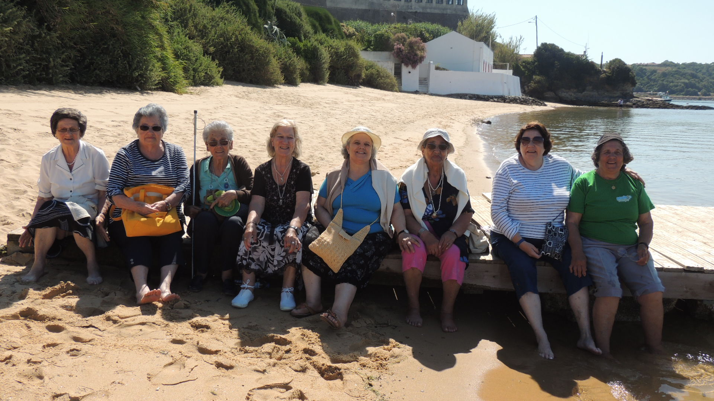
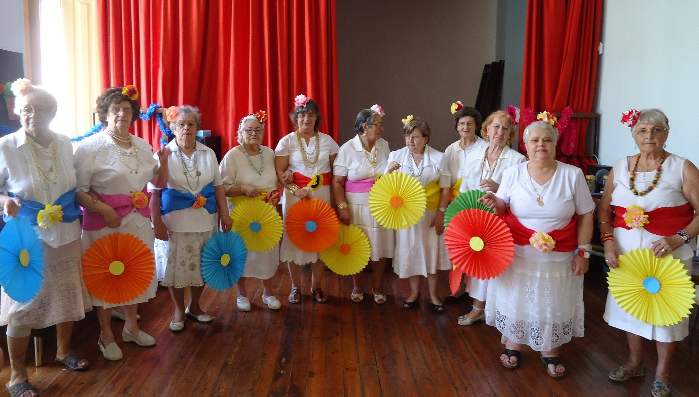
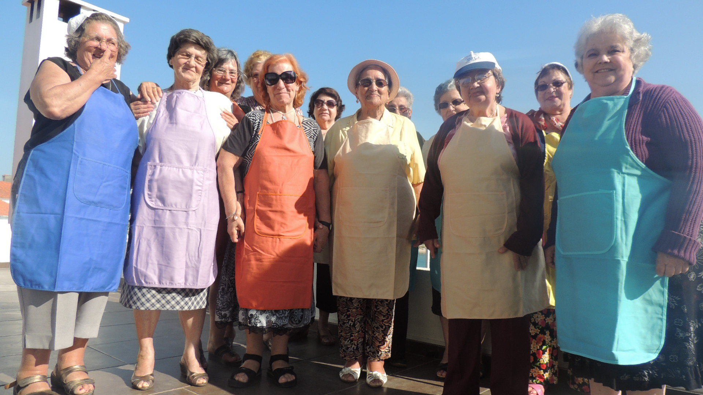

|
|
|
|
|
O Centro de Dia é uma resposta social que consiste na prestação de cuidados individualizados e personalizados, a indivíduos e famílias quando, por motivo de doença, deficiência ou outro impedimento, não possam assegurar temporária ou permanentemente, a satisfação das suas necessidades básicas e/ou as actividades da vida diária
Assegura, assim, a prestação de cuidados e serviços como atividades socioculturais, lúdico-recreativas, de motricidade e de estimulação cognitiva; apoio psicossocial; refeições (almoço e lanche); administração de fármacos quando prescritos; articulação com os serviços locais de saúde.
O Centro de Dia pode ainda assegurar outros serviços, nomeadamente, cuidados de higiene pessoal; cuidados de imagem; jantar; tratamento de roupa; transporte; outros em função das necessidades dos utentes, nomeadamente, serviços de apoio domiciliário complementares.
|  |  |  |